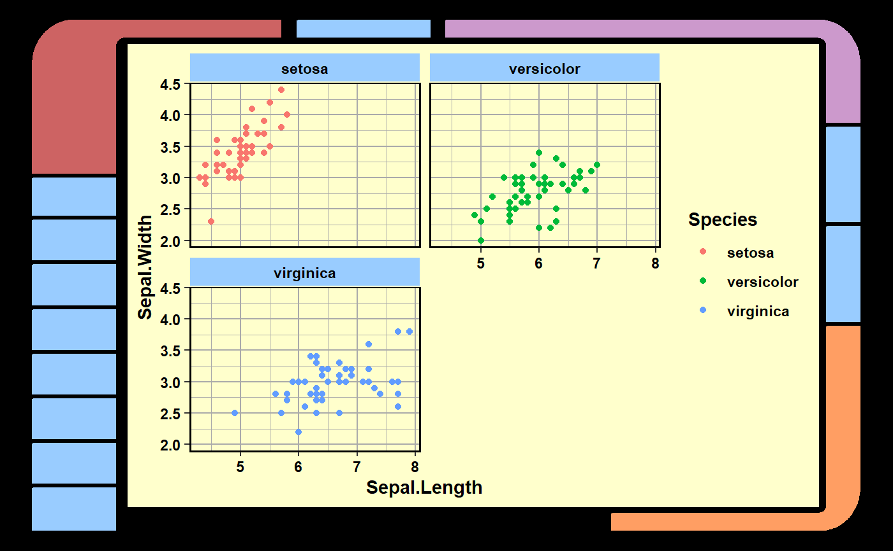

Wrap a ggplot object with an LCARS-themed border or only plot the border.
lcars_border(x = NULL, width = 10, height = 6, corners = 1:4, length_frac = rep(0.5, 8), corner_color = c("#CD6363", "#CC99CC", "#FF9E63", "#FFFF9C"), ro = width/20, ri = height/60, side_width = c(1, 2, 1, 5)/5, side_n_segments = rep(0, 4), side_color = list("#99CCFF", "#99CCFF", "#99CCFF", "#99CCFF"), side_label = rep(NA, 4), label_size = 1, side_label_adj = list(c(0.5, 0.5), c(-0.2, -0.2), c(0.5, 0.5), c(1.1, -0.2)), gap = c(0.02, 0.01), bg = "black", n = 20)
| x | optional inset ggplot object. |
|---|---|
| width | full plot width in inches. |
| height | full plot height in inches. |
| corners | integer, |
| length_frac | numeric, the fraction of a side that a corner extends over. See details. |
| corner_color | vector of corner colors, clockwise from top left. |
| ro | vector of corner outer radii, clockwise from top left. |
| ri | vector of inner outer radii, clockwise from top left. |
| side_width | width of each side, clockwise from top left. |
| side_n_segments | for each side clockwise from top left, the number of rectangle segments used to evenly fill the space between corner bends. |
| side_color | list of color vectors for side segments. Each vector must have the same number of colors as the number of segments for a given side. |
| side_label | list of label vectors for side segments. Each vector must have the same number of colors as the number of segments for a given side. |
| label_size | numeric, global label text size. |
| side_label_adj | list of four vectors, each giving the |
| gap | vector of two values giving the gap fraction from 0 to 1, based on full plot width and height, for the gap between horizontal and vertical segments, respectively. |
| bg | background color, should be left black for LCARS standard. |
| n | integer, number of points used to define inner radii quarter circles for corner bends. |
draws a plot
This function draws a plot. It does not return a new ggplot object.
For length_frac, a vector of eight values from 0 to 1 is required. Starting from the top side, clockwise around to the left side,
they refer to fraction of that side's length over which the relevant corner bend extends.
For example, the first value refers to the top left corner bend's rightward horizontal segment.
The second value refers to the top right corner bend's leftward horizontal segment. This takes care of the top side.
Finally, the last value refers to the downward vertical arm of the top left corner bend.
All arguments that take vectors or lists of length four are in clockwise order from either the top left corner for corner-related arguments or the top side for side-related arguments.
lcars_border()sw <- seq(0.2, 2, length = 4) lcars_border(width = 5, height = 5, ro = sw, ri = sw / 2, side_width = sw)len_frac <- c(0.3, 0.5, 0.2, 0.4, 0.3, 0.2, 0.1, 0.3) n_seg <- c(1, 2, 0, 8) library(ggplot2) g <- ggplot(iris, aes(Sepal.Length, Sepal.Width, color = Species)) + geom_point() + facet_wrap(~Species, 2) + theme_lcars_light() lcars_border(g, corners = 1:3, length_frac = len_frac, side_n_segments = n_seg)